See also some multispiral
Strange Attractors in some
nonautonomous system
See also some multispiral
Strange Attractors in some
nonautonomous system
by Aziz Alaoui See my paper :
Ref ,
in the Int. Journ. of Bifurcation and Chaos 9(6), 1009-1039, (1999), (IJBC).
See also some multispiral
Strange Attractors in some
nonautonomous system
See also some multispiral
Strange Attractors in some
Brockett type dynamical system
See also some multispiral
Strange Attractors in some
PWL Reich-Kapitaniak type
dynamical system
See also some multi-buckle
Strange Attractors in some
Van der pol type system
Interest and applications: for example in,
1) CNNs (Cellular Neural Networks):
using weak linear coupling between chaotic cells, hyperchaos was
obtained in a CNN array, this was demonstrated
with the n-multispiral hypercube CNN, using n-multispiral as cells.
(see the refs therin this paper).
2) secure communications: as the chaos is enhanced in such multispiral
attractors, the latter could be used for communicating with chaos
for increasing security when transmitting a useful inforamtion.
The state equations of Chua's system are given by
{dx}/{dt} = alpha.[y-x-f_2(x)], {dy}/{dt} = x - y + z, {dz}/{dt} = -beta.y -gamma.z,
where x and y are functions of t, f_2(x)= m_1.x + (1/2)(m_0-m_1)[|x+1|-|x-1|] is the Chua's nonlinearity, which is, here, modified to get multispiral attractors, and alpha, beta, gama, m_1 and m_2 are the parameters of the system.
With an EVEN number of spirals :
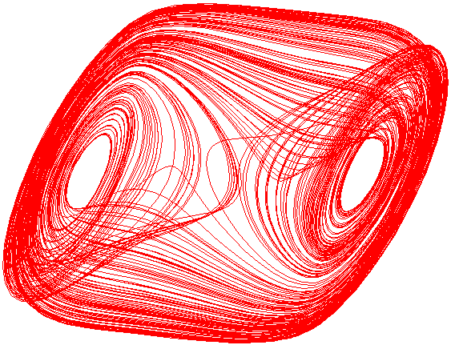
A 2-spiral strange attractor exhibited by the modified Chua's circuit
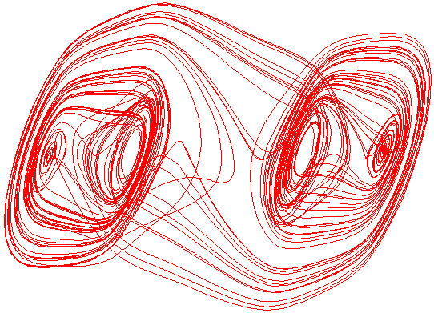
A 4-spiral strange attractor exhibited by the modified Chua's circuit
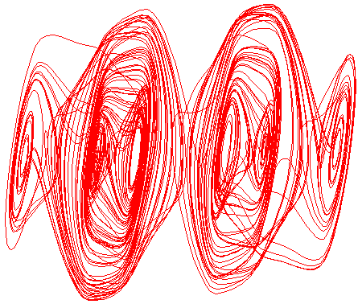
A 6-spiral strange attractor exhibited by the modified Chua's circuit
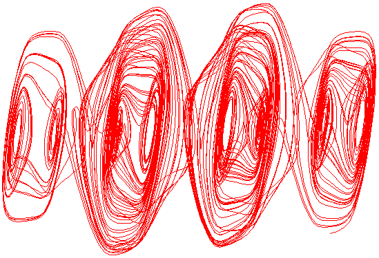
A 8-spiral strange attractor (modified Chua's circuit)
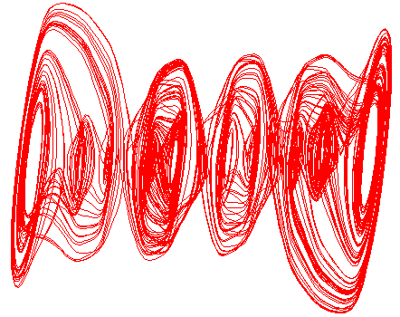
A 10-spiral strange attractor exhibited by the modified Chua's circuit
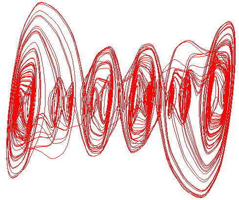
A 12-spiral strange attractor exhibited by the modified Chua's circuit
With an ODD number of spirals :
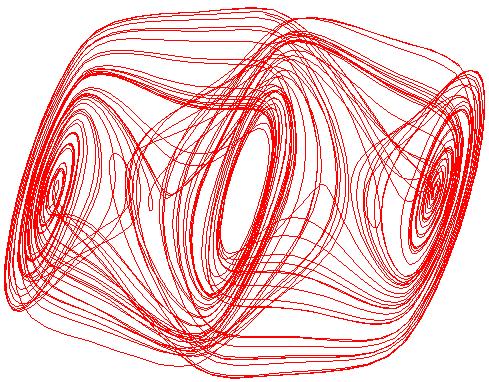
A 3-spiral strange attractor exhibited by the modified Chua's circuit
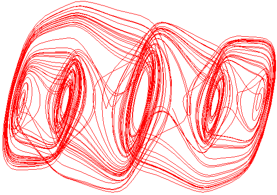
A 5-spiral strange attractor exhibited by the modified Chua's circuit
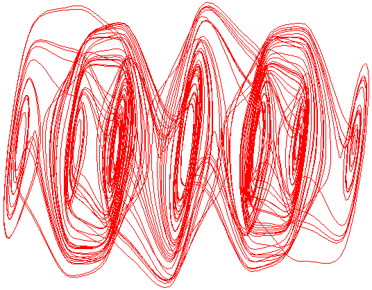
A 7-spiral strange attractor (modified Chua's circuit)
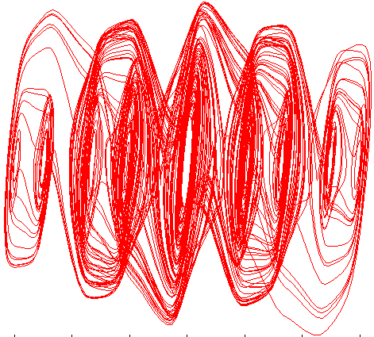
A 9-spiral strange attractor exhibited by the modified Chua's circuit
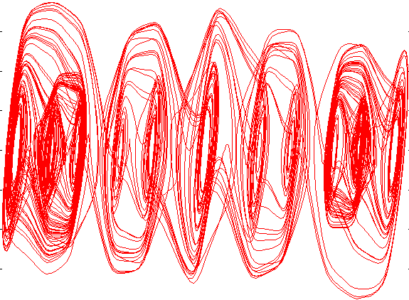
A 11-spiral strange attractor (modified Chua's circuit)
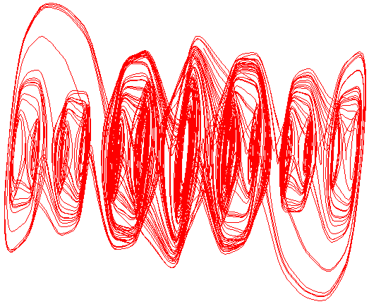
A 13-spiral strange attractor exhibited by the modified Chua's circuit
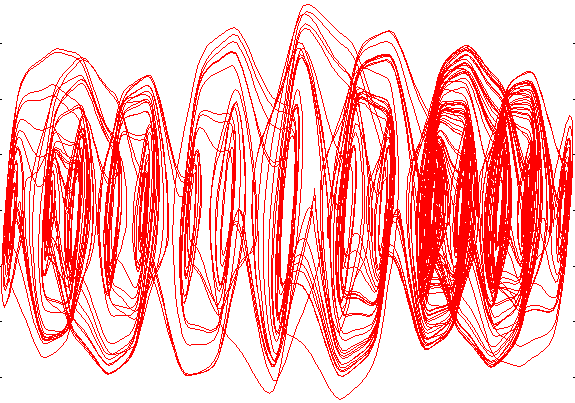
A 15-spiral strange attractor exhibited by the modified Chua's circuit
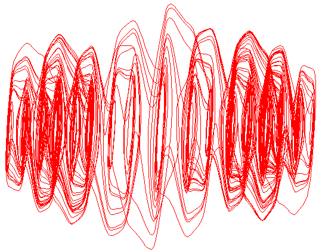
A 17-spiral strange attractor exhibited by the modified Chua's circuit
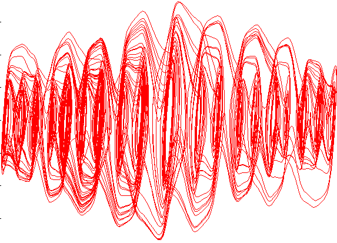
A 19-spiral strange attractor (modified Chua's circuit)
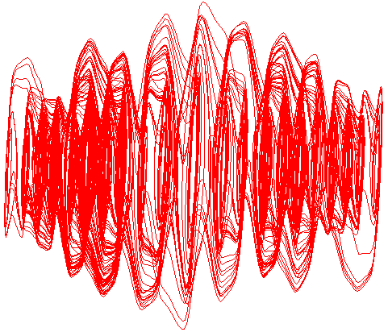
A 21-spiral strange attractor exhibited by the modified Chua's circuit